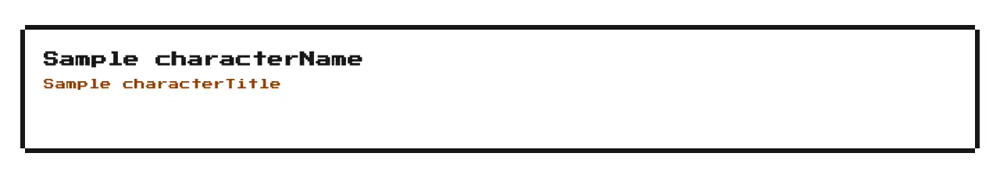

Rendered on the shadcn default neutral palette with harness-generated props.
pnpm dlx shadcn@4.21.0 add @8bitcn/character-sheet
| licence | POINTER |
|---|---|
| primitive base | radix |
| type | registry:block |
| files | src/components/ui/8bit/blocks/character-sheet.tsx |
| npm deps pulled | nuqs |
| registry deps | avatar badge card progress separator |
| semantic / palette / hex | 13 / 9 / 0 |
| writes shared ui/ | yes — can overwrite the project’s own primitives |